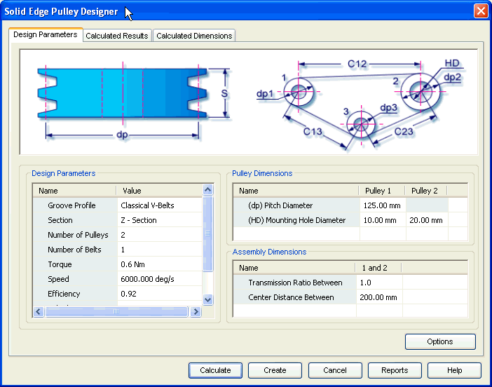

Pulley Design Parameters tab
The Design Parameters tab provides the options you use to enter details required for configuring the parameters for pulleys.

Use this area to input parameters for design and strength calculations of v-belt. The groove profile, section, number of pulleys, number of belts are some of the important parameters that you provide through this area.
Use this area to define the specific parameters of the pulleys. Pitch circle diameter, mounting hole diameter are some of the important parameters you provide through this area.
Use this area to define the assembly parameters of the pulleys. These parameters are used to constraint the pulleys space layout. Center distance and transmission ratio, between the pulleys are the important parameters you provide through this area.
Use the Options button to access the Input Conditions window and select the method of calculation for strength check. The inputs provided on the Design Parameters tab are based on the selections in the Input Conditions window.